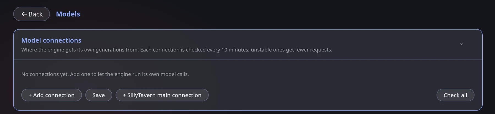

Model connections
Module Engine makes its own model calls on the side of your roleplay. Model connections is the list of models it is allowed to use for that. Without at least one working connection, trackers, summaries and pictures cannot work.
Open the Models tile. The Model connections card inside it lists your connections and has four buttons: + Add connection, Save, + SillyTavern main connection and Check all.

Pick the easy path first
Reuse SillyTavern's connection
Press + SillyTavern main connection. The engine uses exactly what SillyTavern is connected to right now.
- No key to enter
- Works with Chat Completion and Text Completion
- Not supported: Kobold Horde, NovelAI
- Side jobs use the same (often expensive) model
Add your own connection
Press + Add connection and fill in the form.
- Use a cheaper, faster model for bookkeeping
- Several connections can share the load
- A failing one is skipped automatically
- You manage a key yourself
Fill in a connection
| Field | What to enter |
|---|---|
| Format | OpenAI-compatible fits most providers. Also available: Anthropic, Google Gemini, SillyTavern main connection. |
| Endpoint | The provider's API address. For OpenAI-compatible providers it normally ends with /v1. |
| API key | Your key from the provider. |
| Model name | Exactly as the provider spells it. |
| Parallel requests | How many calls the connection takes at once. 1 for a local model, more for cloud APIs. |
Typical OpenAI-compatible endpoints:
| Provider | Endpoint |
|---|---|
| OpenAI | https://api.openai.com/v1 |
| OpenRouter | https://openrouter.ai/api/v1 |
| NanoGPT | https://nano-gpt.com/api/v1 |
| A local server | its own address, e.g. http://127.0.0.1:5000/v1 |
Press Test — it sends one tiny request and tells you whether the connection answers.
Health checks
Every connection is checked every 10 minutes while idle. The line under each one shows its state:
| State | Meaning | What the engine does |
|---|---|---|
| Up | Answers normally | Uses it |
| Unstable | Sometimes fails or is slow | Sends it fewer requests |
| Down | Not answering | Only uses it when nothing else works |
You also see reliability, latency and the last error. Check now and Check all run the check immediately.
Common mistakes
| Symptom | Likely cause |
|---|---|
| Rejected / HTTP 401 / 403 | Wrong or expired API key |
| HTTP 404 | Wrong endpoint (often a missing /v1) or a model name the provider does not know |
| HTTP 429 | Rate limit — add another connection, it recovers on its own |
| "Failed to fetch" | The endpoint is unreachable or blocks the browser (CORS) |
Which model for which job? Trackers and summaries answer small structured text — a cheap fast model is plenty. Rewrite passes and prompt writing for pictures benefit from a stronger one. You can pin a different connection per feature.